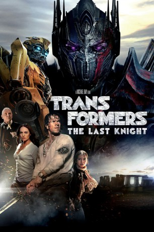

 
 IMDB-Wertung: 5.2 / 10
IMDB-Wertung: 5.2 / 10  Metascore:
Metascore: 
Der mächtige Anführer der Autobots, Optimus Prime (Stimme im Original: Peter Cullen), hat die Erde verlassen. Fernab unserer Welt merkt er, dass seine Heimat Cybertron zerstört wurde. Um sie wiederaufzubauen, braucht Optimus Prime ein Artefakt, das zu Zeiten von König Artus (Liam Garrigan) auf unserem Planeten versteckt wurde. Und die brutale Wahrheit lautet: Nur eine der beiden Welten kann leben – entweder Cybertron oder die Erde. Um letztere zu retten, bildet sich eine ungewöhnliches Bündnis: Cade Yaeger (Mark Wahlberg), der Transformer Bumblebee, der englische Lord Edmund Burton (Anthony Hopkins), die Geschichtsprofessorin Vivien Wembley (Laura Haddock) und die junge Izabella (Isabella Moner) versuchen gemeinsam, den Untergang abzuwenden – in einem Kampf, in dem aus Freunden Feinde werden…
Jahr: 2017
Dauer: 155 Minuten
FSK: 12
Land: China Studio: Paramount PicturesTonspuren: DD5.1 - ,
Untertitel: Deutsch,
Auflösung: 1080p (1920x1080) Größe: 14540 MB
Genre: Action, Sci-Fi, Abenteuer
Regisseur:  Michael Bay
Michael Bay
Drehbuch: Art Marcum
Soundtrack:
Darsteller:
Datei: X:\6-Hexalogie(A-Z)\Transformers\Transformers 5 - The Last Knight (2017, FSK12, 1920x1080) 3D.mkv seit 14.11.2017
Festplatte: HD Collection-3(N-Z)-6(A-Z)
 Es gibt insgesamt 12 Filme in der Gruppe '6-Hexalogie(A-Z)\Transformers'
Es gibt insgesamt 12 Filme in der Gruppe '6-Hexalogie(A-Z)\Transformers'